Autonomous Drone Spraying Solutions
High-precision crop protection, foliar nutrition, and ultra-low-volume spraying with DGCA-certified flight crews.
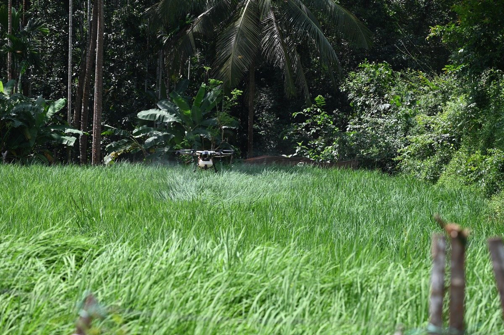
Paddy / Rice ₹450 / acrePaddy Spraying
Complete coverage for blast, brown planthopper (BPH), and sheath blight in flooded paddies.
- Zero plant trampling or mud tracking
- 90% water saving with micron droplets
- Covers 30–35 acres/day per drone team
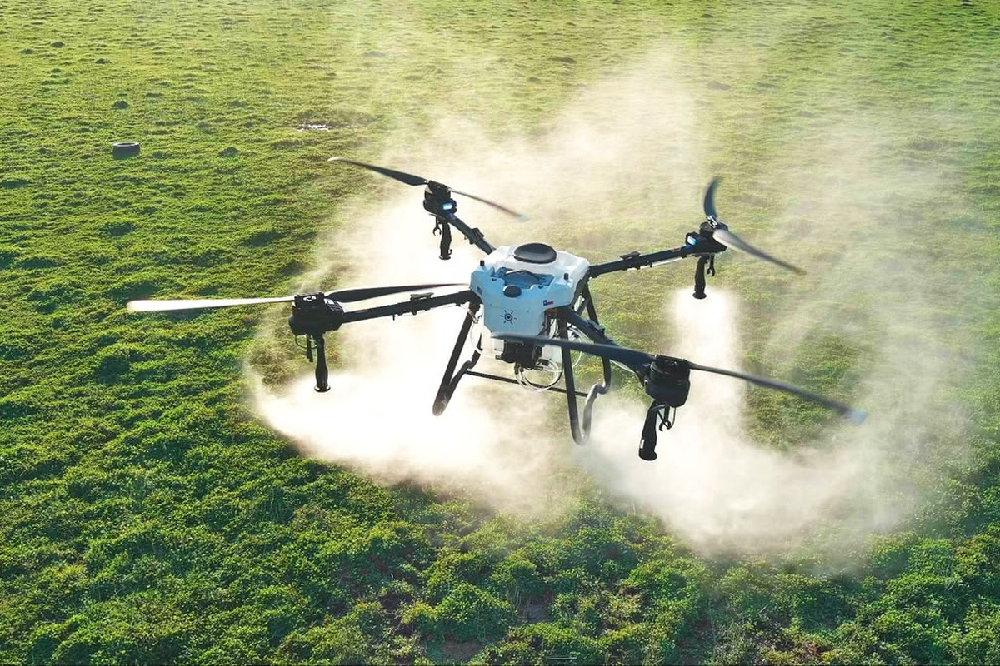
Commercial Crop ₹480 / acreCotton Spraying
Downward prop wash flips dense cotton leaves to reach hidden pink bollworms and whiteflies.
- Canopy turbulence coats leaf undersides
- Fast 6-minute acre turnaround
- Eliminates manual worker skin contact
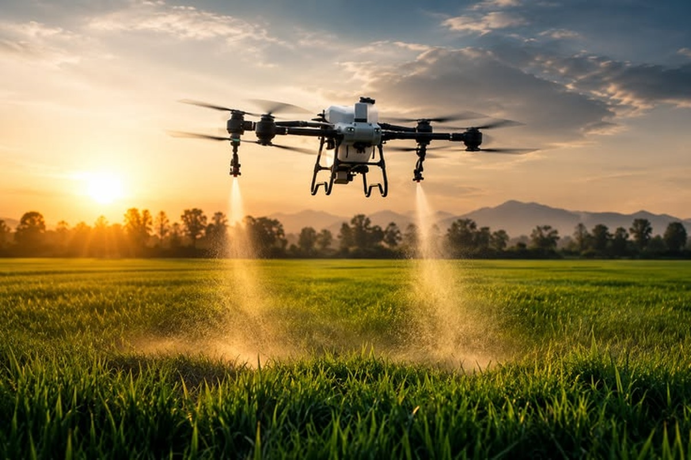
Tall Canopy ₹550 / acreSugarcane Spraying
Solves the impossible challenge of entering 12ft tall cane fields to control top borer and pyrilla.
- Autonomous terrain-follow radar
- Reaches dense stalk junctions
- Safe operations with zero crop injury
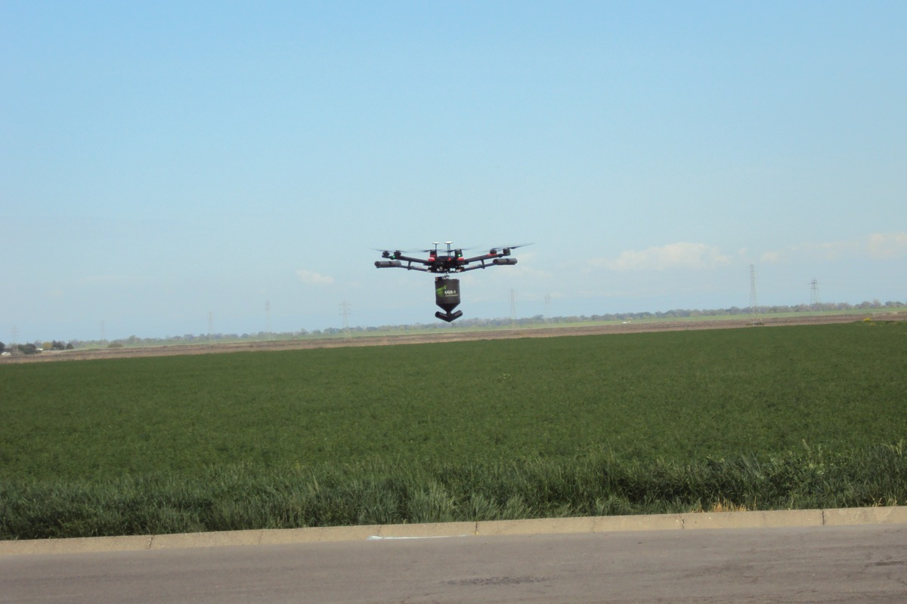
Grain & Corn ₹460 / acreMaize Spraying
Downward vortex atomization penetrates deep into central maize whorls to eradicate fall armyworm.
- Direct whorl droplet deposition
- Fall Armyworm (FAW) specialist flight
- 25–30 acres covered per day
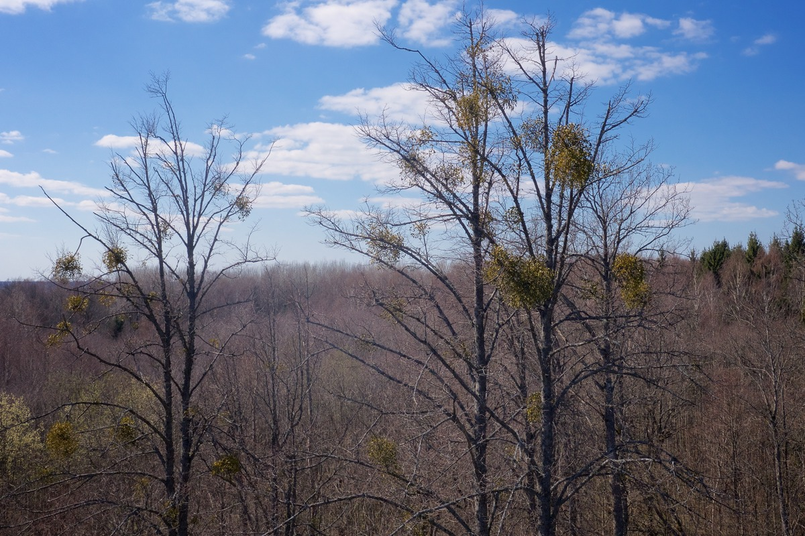
Oilseeds ₹450 / acreGroundnut Spraying
Low-altitude hugging flight delivers uniform fungicide coverage to suppress tikka and rust.
- Complete foliar canopy penetration
- 30% reduction in chemical dosage
- Preserves soil moisture retention
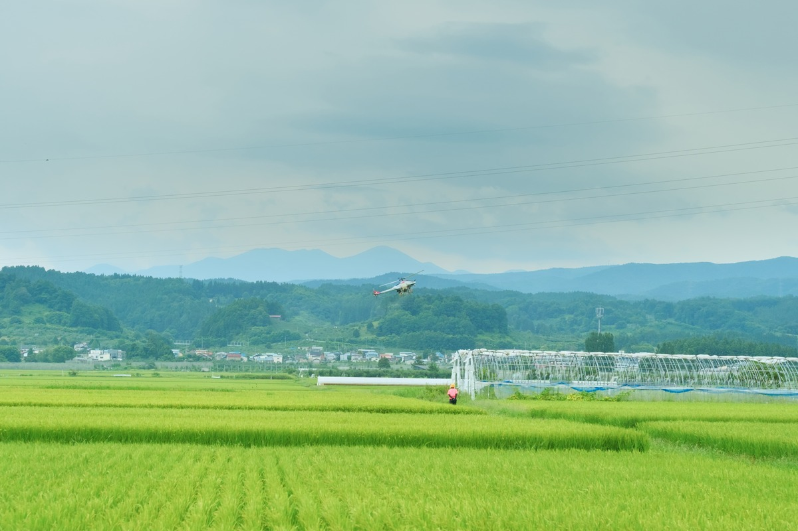
Horticulture ₹520 / acreVegetable Crop Spraying
Micronized mist for sensitive vegetable crops like chili, tomato, onion, and brinjal without leaf burn.
- Ultra-fine 100-micron droplet mist
- Prevents blossom drop & fruit scorch
- Micro-plot precision GPS navigation
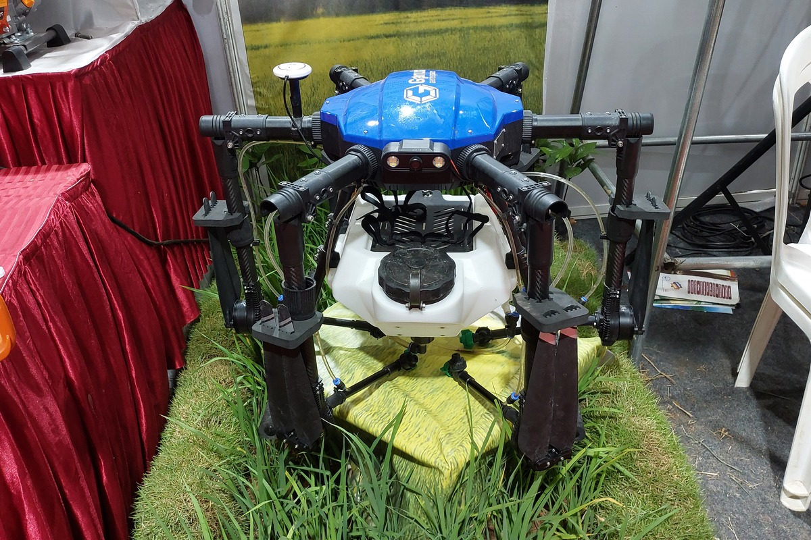
Foliar Nutrition ₹500 / acreFertilizer Spraying
Direct stomatal nutrition via Nano Urea, DAP, liquid potassium, and micronutrient sprays.
- Up to 4x faster nutrient absorption
- Zero ground leaching or runoff
- Enhances green canopy yield by 15%
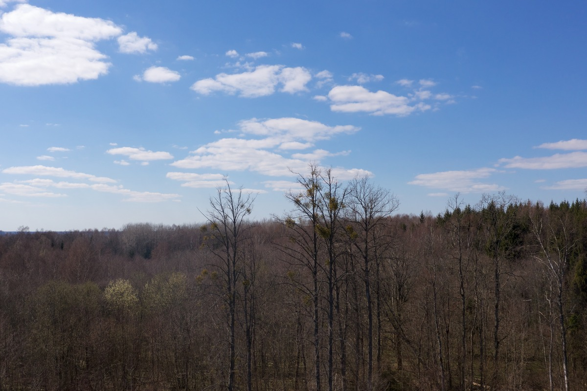
Commercial Farms ₹420 / acreLarge Acreage Spraying
Multi-drone coordinated fleet sorties for corporate plantations, estate farming, and FPO clusters.
- 80–120 acres covered per day
- Wholesale volume discount rates
- On-site mobile battery generator hub
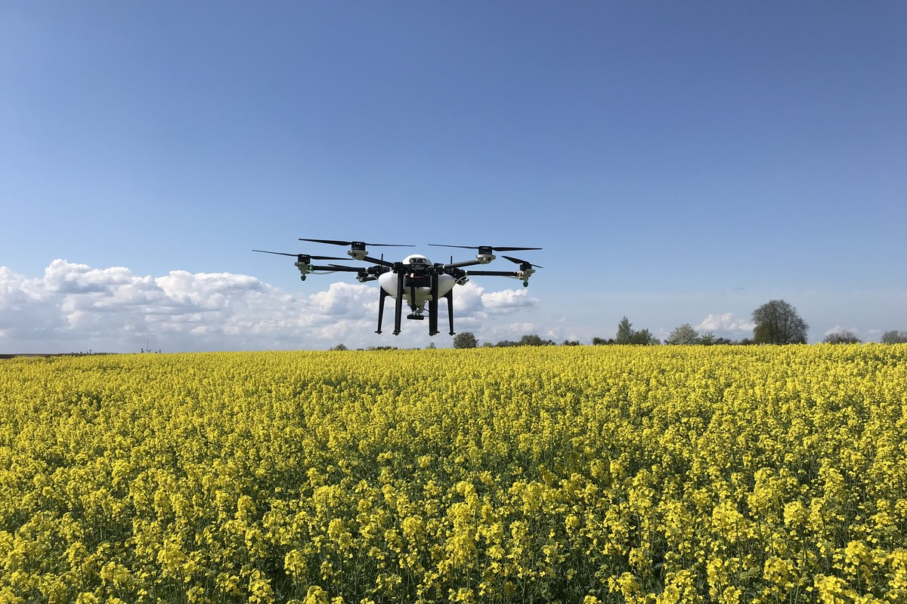
Oilseeds ₹480 / acreMustard Drone Spraying
Contactless aerial canopy protection preserving delicate flowering branches while eradicating aphids and Alternaria blight.
- Zero branch damage in bloom
- 28–32 Acres / day throughput
- Ultra-uniform micron spray over blossoms
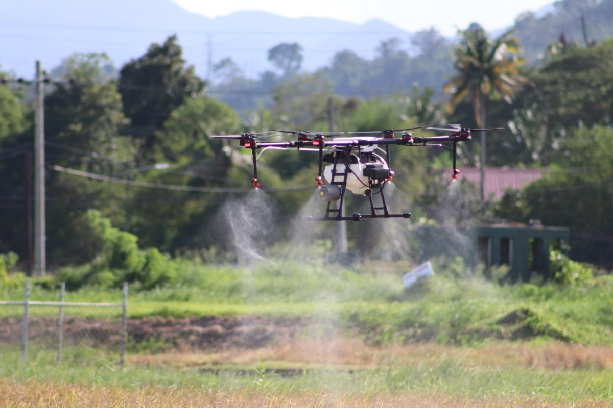
Wheat & Grains ₹470 / acreWheat & Cereal Spraying
Broadacre canopy penetration for yellow rust, powdery mildew, and liquid foliar urea nutrition with zero soil compaction.
- 100% rust & blight canopy coverage
- 28–32 Acres / day throughput
- Zero wheel rutting or plant crushing
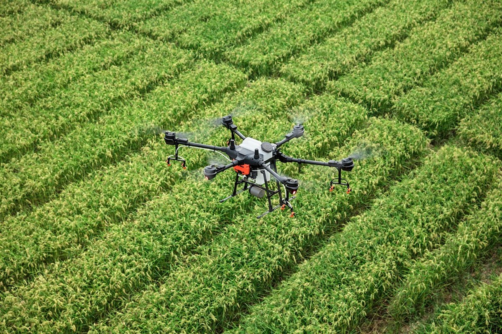
Pulses & Legumes ₹460 / acreSoybean & Pulses Spraying
Rotary atomized mist targeting pod borers, semiloopers, and anthracnose through dense multi-branching legume canopies.
- Deep canopy vortex penetration
- Effective pod borer suppression
- 90% water saving over flood spray
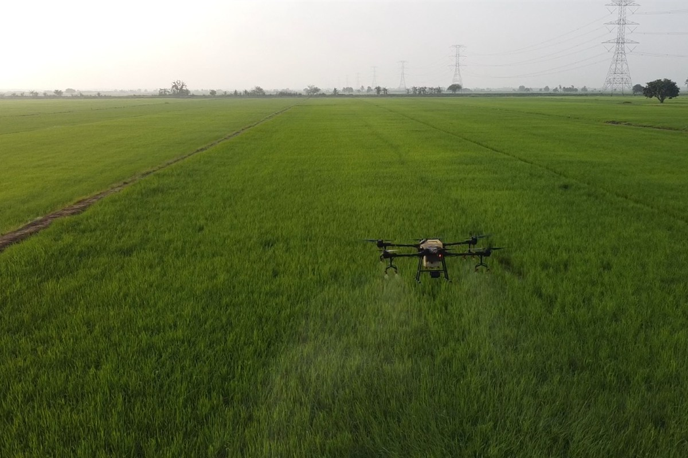
Plantations & Spices ₹540 / acrePlantation & Spices Spraying
Autonomous 3D terrain-following aerial spray for undulating hilly plantations and high-density commercial cash crops.
- 3D contour terrain-following radar
- Thorough thrips & mite eradication
- Reaches steep terraced acreage